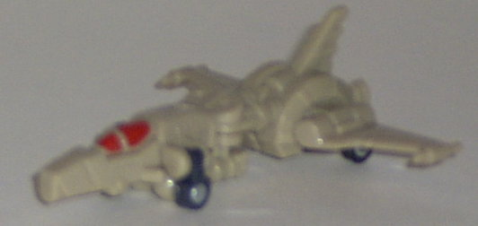
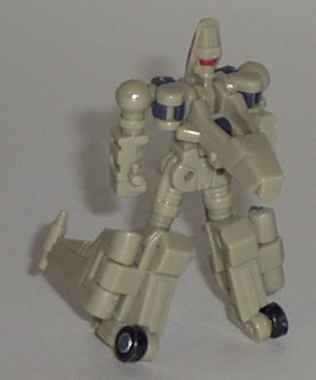
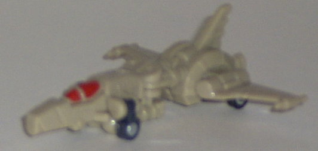
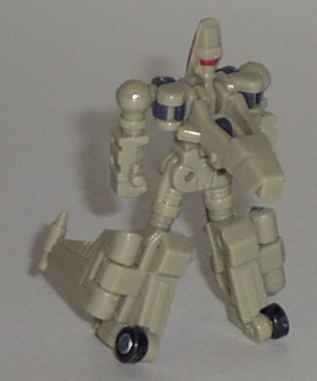
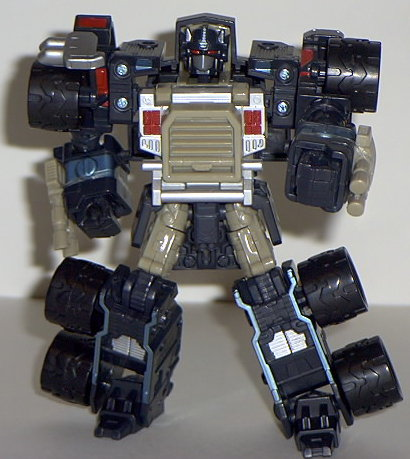
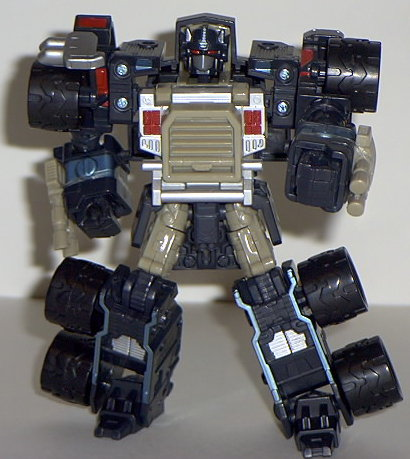

Run-Over
Run-Over
 
Allegiance : Minicon
Size : Mini-Con
Difficulty of Transformation : Very Easy
Color Scheme : Light brown and some dark bluish black, black, and glossy red
Rating: 3.8
(NOTE: Because this set is a repaint, this is not a full-blown review. This mainly covers any changes made to the set and the color scheme, and merely compares it to Super-Con Optimus Prime w/ Over-Run. For a review on the mold itself, read the review of Super-Con Optimus Prime w/ Over-Run here .)
Run-Over


Allegiance
: Minicon
Size
: Mini-Con
Difficulty of Transformation
: Very
Easy
Color Scheme
: Light brown and some
dark bluish black, black, and glossy red
Rating:
3.8
Run-Over's main change
from his predecessor, Over-Run (Get it!? Run-Over, Over-Run? Ha!), is that
he's light brown instead of silver. Whee. Oh, and his windows and visor
are red now. No new paint apps or anything like that- actually, the paint
apps on his wings have been taken AWAY, leaving him even more dull than
he was before. That light brown also just doesn't look very good on a space-fighter.
The silver was much better.
No mold changes have
been made to Run-Over.
Run-Over is a pretty
lackluster repaint, and is easily looked over for the true prize in this
set, Nemesis Prime. The brown simply doesn't go as well with him as the
silver did, and he still needs more paint apps. At least the red visor
and windows look cool, though.
 Nemesis
Prime
Nemesis
Prime
 

Allegiance
: Decepticon
Size
: Super-Con
Difficulty of Transformation
: Easy
Color Scheme
: Dark bluish black,
light brown, black, silver, and some metallic teal and glossy red
Powerlinx ports
: 2 (1 gimmicked)
Rating
: 9.1
Nemesis Prime, the "evil"
repaint of Armada Prime, is most defintely a throwback to
RiD
Scourge
, who not only was an evil repaint of an Optimus Prime toy,
but had near the same color scheme as this guy to boot. Granted, Scourge
didn't have any brown on him, but the main reason for Nemesis Prime having
light brown on him is so that his mold buddy, Run-Over, wouldn't look almost
exactly the same as Over-Run (which he would've if silver were used on
those parts). However, even taking that into account, I think a better
color than brown could have been picked, since brown really doesn't mesh
well with the other colors here. Maybe a blue that's around the same color
as the metallic teal...? Also, most of the black on Nemesis Prime isn't
a "pure" black, but rather a dark bluish black. It's not too bad, just
enough where it's noticeable. As is almost always the case, a more pure
black would have had a better effect. The teal, silver, and red highlights
are awesome, though, and can't be beat. (Although a few more paint apps
on the top of the vehicle mode would have helped to break up all the black
a little.)
No mold changes have
been made to Nemesis Prime.
Nemesis Prime is a pretty
nice repaint, and might have surpassed Super-Con Armada Prime if it wasn't
for the brown and the slightly bluish tone on the black. As it is, he falls
slightly below his predecessor. He's still a recommended buy, though, if
you can find him.
No Stats
Review by Beastbot